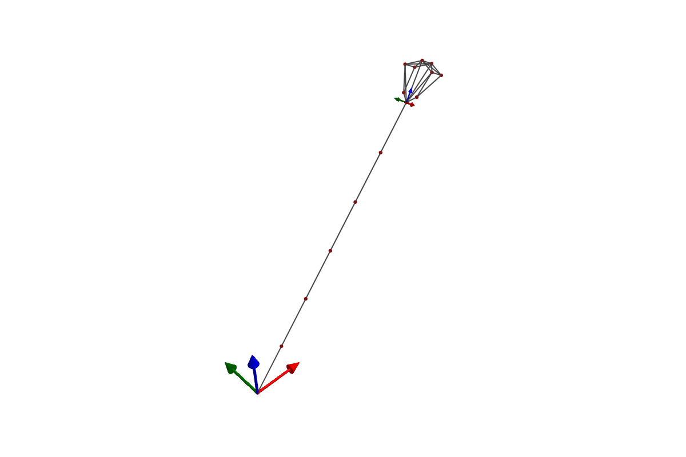

Examples
Visualization with GLMakie
SymbolicAWEModels provides plotting functionality through a package extension that automatically loads when you use GLMakie. Simply using GLMakie after loading SymbolicAWEModels to enable all plotting functions.
using SymbolicAWEModels
using GLMakie # Automatically loads the plotting extension3D system structure — interactive visualization with clickable segments:
plot(sam.sys_struct)
Time-series data — multi-panel plots of simulation results:
(log, _) = sim!(sam, set_values)
plot(sam.sys_struct, log; plot_default=true)Interactive replay — scrub through a simulation with playback controls:
save_log(logger, "my_run")
syslog = load_log("my_run")
replay(syslog, sam.sys_struct)Record to video — save a simulation as an MP4 file:
record(syslog, sam.sys_struct, "simulation.mp4"; framerate=30)See the Functions page for plotting keyword arguments.
Getting examples
Registry users — copy examples and data to your project:
using SymbolicAWEModels
using GLMakie
SymbolicAWEModels.copy_data()
SymbolicAWEModels.copy_examples()
include("examples/menu.jl") # Interactive menuCloned repository — start Julia with the examples project:
julia --project=examplesusing Pkg; pkg"dev ." # First time only
include("examples/menu.jl")Structural examples
These examples demonstrate the building blocks without aerodynamics:
| Example | Description |
|---|---|
hanging_mass.jl | Simplest possible system: a mass on a spring |
catenary_line.jl | Multi-segment tether hanging under gravity |
simple_pulley.jl | Two segments with a pulley constraint |
pulley.jl | Pulley system with winch control |
saddle_form.jl | Complex mesh demonstrating 3D structures |
airbag.jl | Pressurized square membrane inflating under internal gauge pressure |
Coupled examples
These examples combine structural dynamics with aerodynamics. See the compilation pipeline page for how models are built and run.
2-Plate Kite
This example loads the 2-plate kite from YAML geometry and runs a coupled aerodynamic-structural simulation with a steering ramp:
using SymbolicAWEModels, VortexStepMethod
using KiteUtils: init!, next_step!, update_sys_state!
set_data_path("data/2plate_kite")
# Sync aero geometry from structural geometry
struc_yaml = joinpath(get_data_path(), "quat_struc_geometry.yaml")
aero_yaml = joinpath(get_data_path(), "aero_geometry.yaml")
update_aero_yaml_from_struc_yaml!(struc_yaml, aero_yaml)
# Load settings and VSM configuration
set = Settings("system.yaml")
vsm_set = VortexStepMethod.VSMSettings(
joinpath(get_data_path(), "vsm_settings.yaml"); data_prefix=false)
# Build system structure from YAML
sys = load_sys_struct_from_yaml(struc_yaml;
system_name="2plate_kite", set, vsm_set)
sam = SymbolicAWEModel(set, sys)
init!(sam)
# Run with a steering ramp
for step in 1:600
t = step * (10.0 / 600)
ramp = clamp(t / 2.0, 0.0, 1.0)
sam.sys_struct.segments[:kcu_steering_left].l0 -= 0.1 * ramp
sam.sys_struct.segments[:kcu_steering_right].l0 += 0.1 * ramp
next_step!(sam; dt=10.0/600, vsm_interval=1)
endSee coupled_2plate_kite.jl for the full example with logging and replay.
External kite models
Full kite models with bridle systems, detailed aerodynamics, and validation have been moved to dedicated packages:
- RamAirKite.jl — Ram air kite with 4-tether steering and deformable wing groups
- V3Kite.jl — TU Delft V3 leading-edge-inflatable kite (YAML-based)
Real-time visualization
The coupled_realtime_visualization.jl example demonstrates a custom simulation loop with real-time 3D visualization using Makie observables. Key concepts:
- Create
Observableobjects for dynamic data (positions, orientations) - Update observables in the simulation loop at a configurable interval
- Use sleep timing to maintain real-time pacing
Configuration:
realtime_factor: Speed multiplier (2.0 = 2x speed)plot_interval: Update plot every N stepsdt: Simulation time step
See examples/coupled_realtime_visualization.jl for the full implementation.